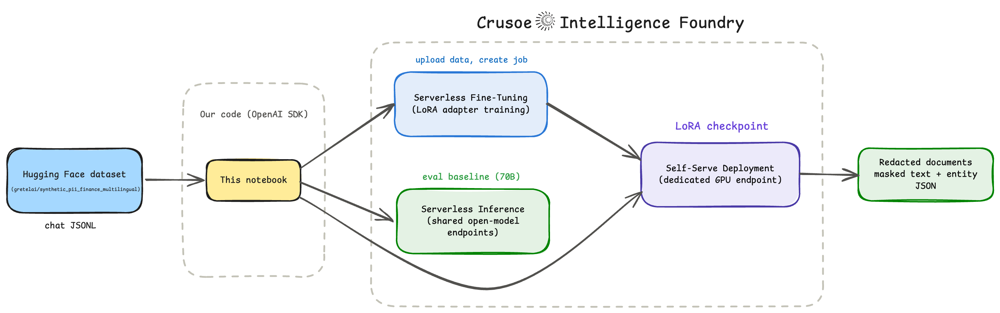
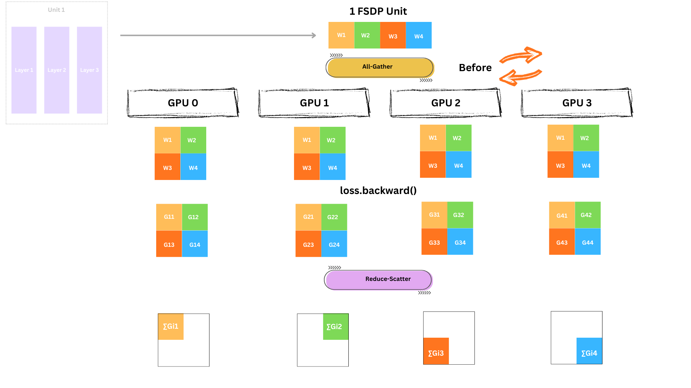
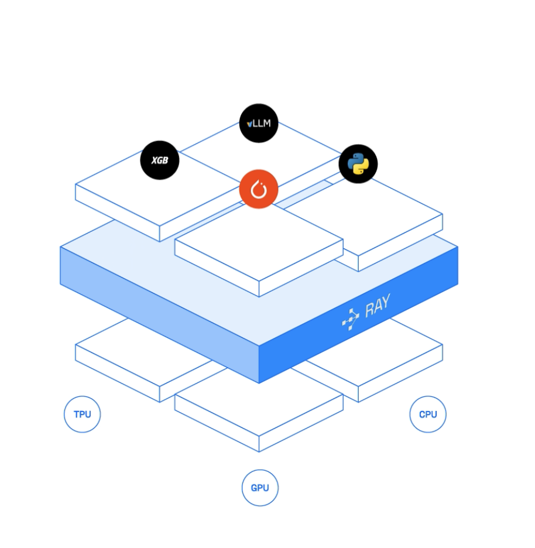

Deep dives into machine learning, audio AI, and distributed systems — with math, code, and intuition.

A ground-up journey into fine-tuning LLMs, where we build quantization and LoRA from scratch in plain PyTorch, combine them into QLoRA, and finally fine-tune Qwen3-8B into a PII redaction engine that outperforms a 70B model, using Crusoe’s Serverless Fine-Tuning.

A deep dive into FSDP internals with visual walkthroughs, hands-on implementation with Ray, PyTorch and DeepSpeed, and finally training a fine-tuned voice cloning model using 1.7B parameter Qwen3-TTS to clone your own voice.

In this blog, we’ll explore distributed training together, breaking down the core concepts and hands-on techniques for scaling deep learning models across multiple GPUs and machines using PyTorch and Ray.